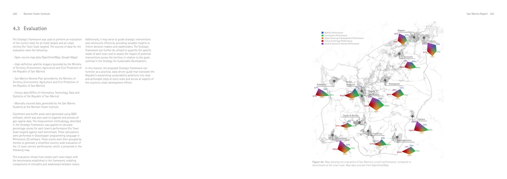
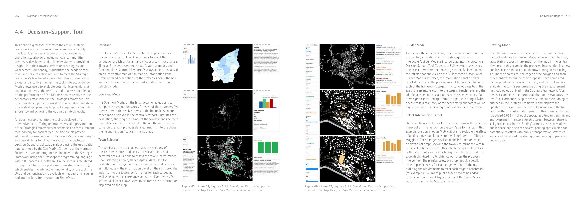
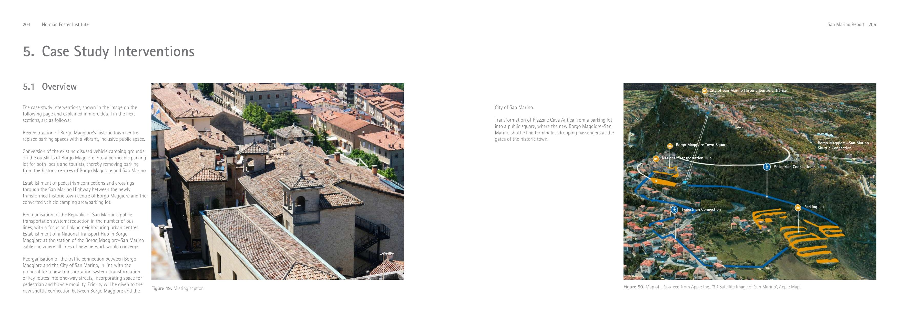
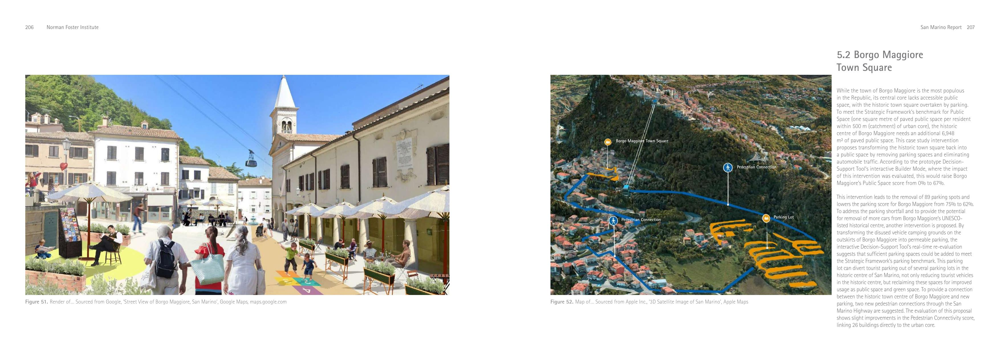
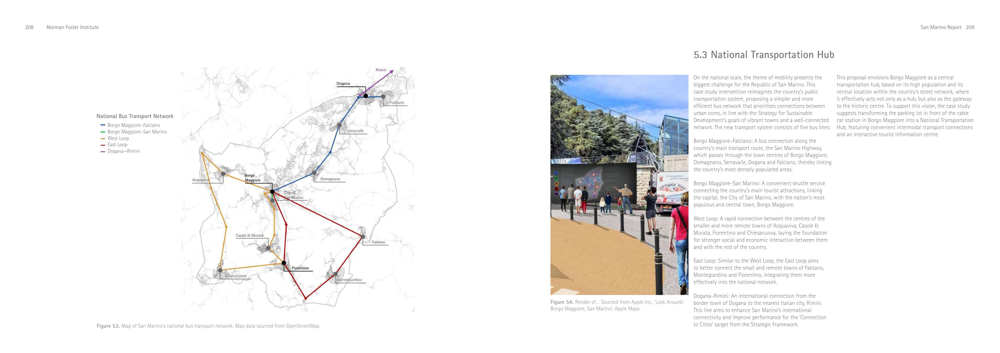
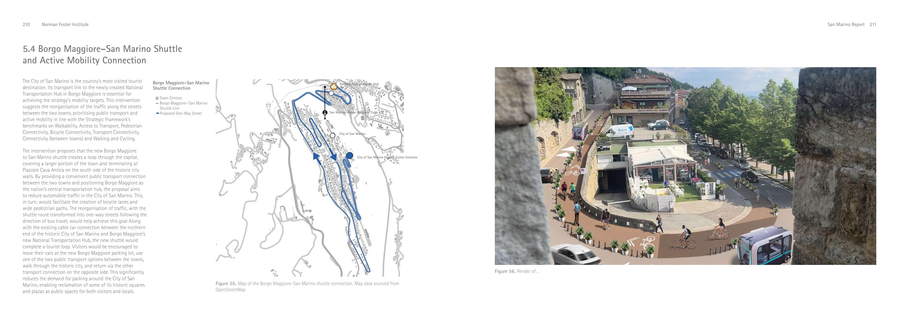

01 · Town square
Borgo Maggiore
2024 Norman Foster Institute Master’s Programme on Sustainable Cities. Cohort work toward a conservation and sustainable development plan for the Republic of San Marino.
Essential services within walking distance — reduce car dependency, build equitable hubs.
Cohort work of the 2024 NFI Master’s Programme on Sustainable Cities. Iván Tamayo Ramos was a 2024 Fellow. Not sole authorship.
The Republic of San Marino is a landlocked microstate surrounded by Italy, between the Apennines and the Adriatic: 61.2 km², about 35,000 people, nine municipalities (castelli). The capital, the City of San Marino, sits on Monte Titano (749 m) and is a UNESCO World Heritage site. Borders have been unchanged since 1463. Two heads of state (capitani reggenti) are elected every six months. About two million tourists visit each year, mostly from Italy. The economy is tourism, banking and manufacturing.
San Marino has no ports, airports or railway stations of its own. It is among the world’s most car-dependent countries: about 1,300 cars per 1,000 inhabitants; transport is 60% of national greenhouse-gas emissions. Public transport (eight bus lines plus the 1959 Funivia cable car, ~500,000 passengers/year) reaches 98% of the population but is the preferred commute for only 7%. Only 20% of buildings have direct pedestrian infrastructure. Borgo Maggiore is the street-network central hub.
Strategy. The 2024 cohort produced a comprehensive layer analysis (climate, mobility, buildings, resources, culture, economy) and a Strategy for Sustainable Development inspired by the 15-minute city and Cittaslow. Three scales / three goals: Town — Vibrant Towns; National — Well-Connected Network; International — International Attractor. A Strategic Framework of 32 measurable targets grouped in five themes (Mobility, Environment, Urban Planning & Development, Culture & Heritage, Social & Economic Activity). Catchments and buffers were built in QGIS; scores were calculated in Grasshopper / Rhinoceros 3D.
A prototype Decision-Support Tool on ShapeDiver puts the framework on an interactive map (English/Italian). Overview compares the 12 towns. Builder Mode flags targets under 75% of benchmark. Drawing Mode lets a user sketch an intervention (e.g. a public-space polygon) and re-scores the town in real time. Example: adding public space in Borgo Maggiore; 6,948 m² is what the historic centre needs to hit 1 m² of paved public space per resident within 500 m.


Interventions. The three moves concentrate on Borgo Maggiore and its link to the historic capital — reconstruct the town square; convert disused camping grounds to permeable parking with pedestrian crossings of the San Marino Highway; simplify the bus network into a National Transport Hub at the cable-car station; reorganise the Borgo Maggiore–San Marino road as one-way streets with a shuttle, bikes and pedestrians. Piazzale Cava Antica (now parking) becomes a public square at the shuttle terminus, at the historic-centre gates.

Town square. Borgo Maggiore is the most populous town but its historic square is parking. Removing cars raises the Public Space score from 0% to 67% (DST Builder Mode) and removes 89 parking spots (parking score 75% → 62%). Permeable parking on the disused camping grounds at the outskirts recovers the parking benchmark and can take tourist cars out of the UNESCO centre. Two new pedestrian connections across the highway link 26 buildings directly to the urban core.

National Transportation Hub. Five bus lines — Borgo Maggiore–Falciano (along the San Marino Highway through Domagnano, Serravalle, Dogana, Falciano); Borgo Maggiore–San Marino shuttle; West Loop (Acquaviva, Casole & Murata, Fiorentino, Chiesanuova); East Loop (Faetano, Montegiardino, Fiorentino); Dogana–Rimini (international). The parking lot in front of the cable-car station becomes the hub: intermodal connections and a tourist information centre.


Shuttle. A loop through the capital terminating at Piazzale Cava Antica on the south side of the walls. One-way streets follow bus travel so cycle lanes and wide sidewalks can be added. Together with the existing cable car this completes a tourist loop: leave the car at the new Borgo Maggiore parking, ride one public mode up, walk the historic city, return by the other. That cuts parking demand around the capital so historic squares can be reclaimed.
